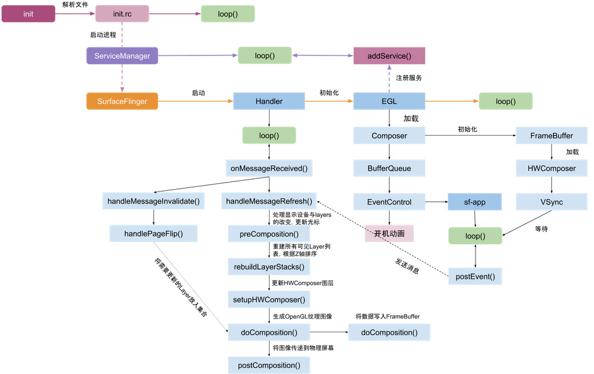

SurfaceFlinger¶
合成方式¶
目前SurfaceFlinger中支持两种合成方式，一种是Device合成，一种是Client合成。SurfaceFlinger 在收集可见层的所有缓冲区之后，便会询问 Hardware Composer 应如何进行合成
Client合成
Client合成方式是相对与硬件合成来说的，其合成方式是，将各个Layer的内容用GPU渲染到暂存缓冲区中，最后将暂存缓冲区传送到显示硬件。这个暂存缓冲区，我们称为FBTarget，每个Display设备有各自的FBTarget。Client合成，之前称为GLES合成，我们也可以称之为GPU合成。Client合成，采用RenderEngine进行合成
Device合成
就是用专门的硬件合成器进行合成HWComposer，所以硬件合成的能力就取决于硬件的实现。其合成方式是将各个Layer的数据全部传给显示硬件，并告知它从不同的缓冲区读取屏幕不同部分的数据。HWComposer是Devicehec的抽象。
通过dump，就可以知道当前有那些Layer，都用什么合成方式
:/ # dumpsys SurfaceFlinger